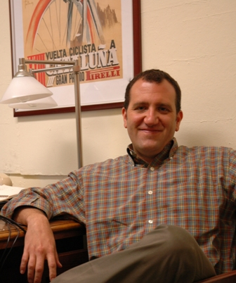

 |
Dr. Gilley's research focuses on the theoretical and cultural logic of social acceptance, particularly as it relates to issues of identity, health and the body. His research currently focuses on two ethnographic areas – American Indians living with HIV/AIDS and the body culture of professional road cycling.
Dr. Gilley's research program concerning HIV/AIDS among Native American communities examines the ways Native peoples incorporate HIV/AIDS into cultural constructions of illness causality and disease theories. This research also examines issues of stigma and alienation surrounding HIV infection. The goals of this research are to examine through a historical trajectory the ways HIV stigma in Native communities affects individuals' decisions surrounding care.
Anthropology of sport is an emerging research area for Dr. Gilley. His research focus is on the ways body culture in professional road cycling articulates with transnational sporting tradition and business. In particular he is concentrating on the surveillance of bodily movement (inspired by the work of Henning Eichberg) by the cycle sports industry. This research includes investigations into the ways cyclists manage their bodies and the ways specific forms of bodily movement are endorsed by the cycle sports industry.
His recent book, Becoming Two-Spirit, documents the ways Two-Spirit (gay) Native American males challenge their alienation from mainstream Native and tribal society. Looking at the relationship between power, difference and agency, this research investigates the ways in which Two-Spirit men actively construct their cultural and social identity in response to historic gender ideology, contemporary popular gay culture, tribal identity, and mainstream ideas about Indianness.
Additionally, Dr. Gilley has conducted demographic research for the United States Census Bureau, ethnographic work with Native American gangs, and ethnohistorical research with the Seneca-Cayuga of Oklahoma and New York.
Dr. Gilley holds a Ph.D., M.A. and B.A. in Socio-Cultural Anthropology from the University of Oklahoma (2002). He is also a faculty member in the ALANA US Ethnic Studies Program at UVM.
Books
Gilley, B.J. Becoming Two-Spirit: Gay Identity and Social Acceptance in Indian Country (2006) University of Nebraska Press.
Recent Articles
Gilley, B.J. & M. Keesee (2007) Linking ‘White Oppression' and HIV/AIDS in American Indian etiology: Conspiracy Beliefs among AI MSMs and their peers, American Indian and Alaska Native Mental Health Research: The Journal of the National Center 14(1): 34 - 51.
Gilley, B.J. (2006) “Snag Bags”: Adapting Condoms to Community Values in American Indian Communities, Culture, Health and Sexuality 8(6): 1-12.
Gilley, B.J. (2006) Cyclist Subjectivity: Corporeal Management and the Inscription of Suffering, Anthropological Notebooks , 12 (2): 53 - 64.
Rak, E. & Gilley, B.J. (2006) The Problem with biomedical approaches to the American Indian HIV/AIDS problem. HIV/AIDS among American Indians/Alaska Natives: Culturally appropriate programmatic approaches , Health Resource Service Administration, Government Printing Office.
Gilley, B.J.; Co-cke, J. H. (2005) Cultural Investment: Providing Opportunities to reduce Risky Behavior among Gay American Indian Males. Journal of Psychoactive Drugs , Special Issue: “Faces of HIV/AIDS and Substance Abuse in Native American Communities” 37(3), 293 - 8.
Gilley, B.J. (2005) Two-Spirit Powwows and the Search for Social Acceptance in Indian Country, In Powwow: Origins, Significance, and Meaning , Eric Lassiter, ed., University of Nebraska Press, 224-240.
Gilley, B.J. (2004) Making Traditional Spaces: Cultural Compromise at Two-Spirit Gatherings in Oklahoma, American Indian Culture and Research Journal , 28 (2): 81-95.